Bayesian Edge Analytics of Manufacturing Process and Health Status in an IoT Framework
October 29th 2019
Daniel NewmanDepartment of Mechanical Engineering
Georia Institute of Technology
danielnewman@gatech.edu
Introduction
- Transition to Industry 4.0 and IoT
Motivation
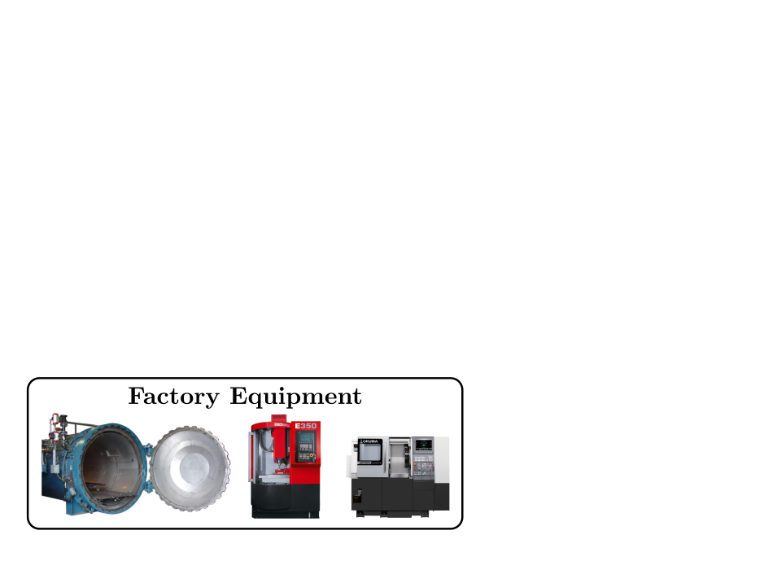
Motivation
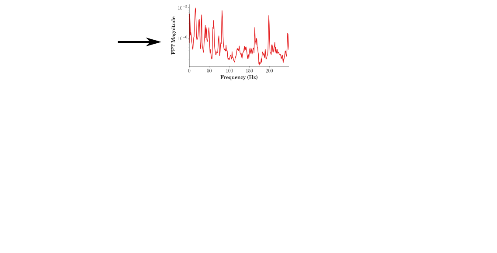
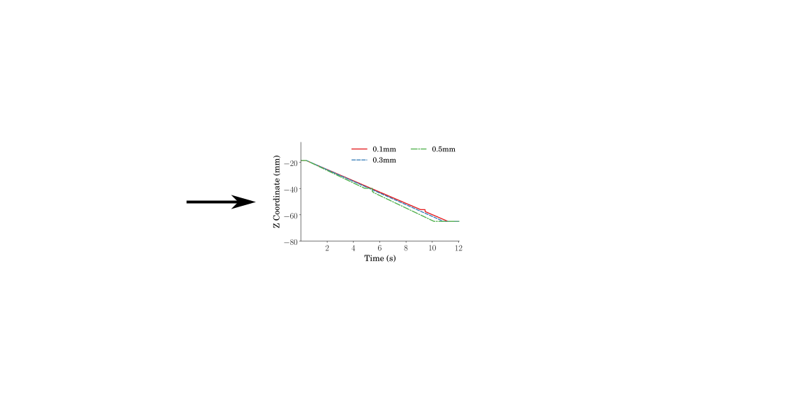
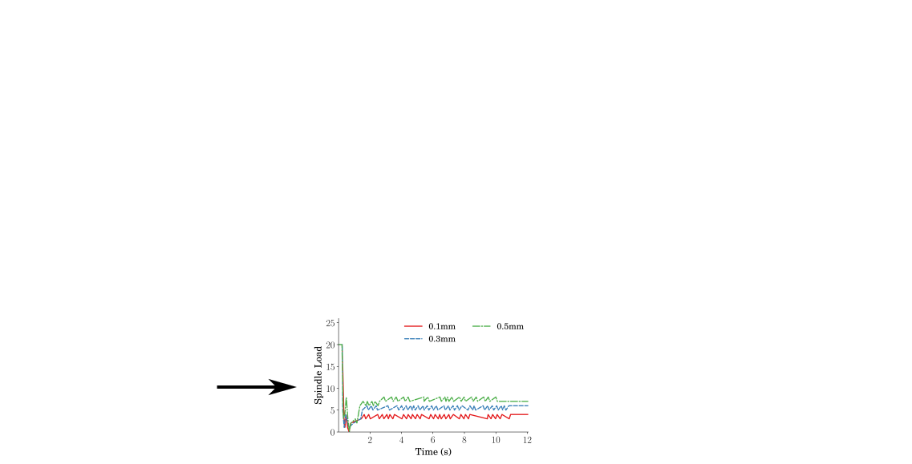
Motivation
Central Thesis:
Develop an integrated data acquisition strategy which facilitates enterprise-level planning by performing edge statistical analysis on machine health and utilization data.
Develop an integrated data acquisition strategy which facilitates enterprise-level planning by performing edge statistical analysis on machine health and utilization data.
Motivation
- Retrieve high-quality machine and process data
- Accommodate a range of machine types
- Use modern, efficient IoT protocols
- Facilitate enterprise-level machine utilization monitoring, part quality tracking, and machine maintenance scheduling
Challenges
- High-dimensional data from multiple sources
- Accelerometers: >10kHz sampling rate
- Controller data: ~100Hz sampling rate for multiple axes
- Lack of information surrounding the nature of fault conditions
- Production-critical machines: prognostic algorithms should be interpretable
Outline
- Background
- IoT Frameworks
- Wireless Sensor Devices
- CNC Communications Protocols
- Vibration Analytics
- Statistical Tools
- Research Opportunities
- Proposed Activities
- Work Completed
IoT Frameworks
Background
Wireless Sensor Devices
Background
CNC Communication Protocols
Background
Vibration Analytics
- Bearing Failure Characterization
- Time Domain Analytics
- Frequency Domain Analytics
- Spectral Kurtosis
- Amplitude Demodulation
Background
Research Opportunities
Proposed Activities
- Development of statistically-based machine monitoring algorithms
- IoT-optimized bearing analytics
- Machine utilization and anomaly detection
- Extension of an IoT architecture for manufacturing machine monitoring
- Development of a modular IoT edge device for integrated data acquisition
Bearing Characteristics
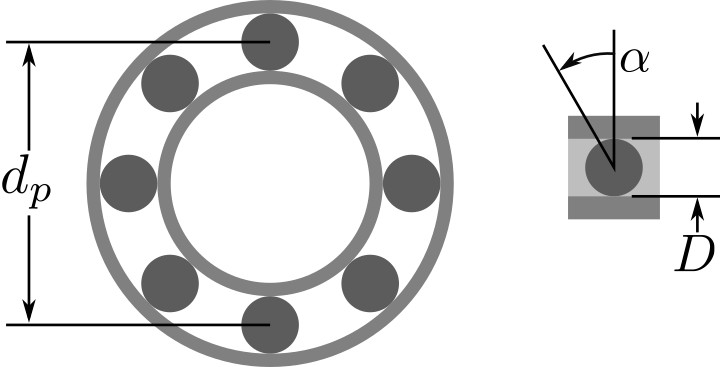
- $n$ - number of rolling elements
- $\beta$ - contact angle
Bearing Defect Frequencies
$$\begin{aligned}f_{bpi} &= n \frac{\mbox{RPM}}{2} \left ( 1 + \frac{D}{d_p} \cos{\alpha} \right )\\
f_{bpo} &= n \frac{\mbox{RPM}}{2} \left ( 1 - \frac{D}{d_p} \cos{\alpha} \right )\\
f_{bs} &= \mbox{RPM} \frac{d_p}{2D} \left [ 1 - \left ( \frac{D}{d_p} \cos{\alpha} \right )^2 \right ]\\
f_{ft} &= \frac{\mbox{RPM}}{2} \left ( 1 - \frac{D}{d_p} \cos{\alpha}\right )\end{aligned}$$
Bearing Analytics
- Vibration data are commonly used to assess bearing health
- Many metrics have been used for bearing prognostics and diagnostics
- Root Mean Square
- Kurtosis
- Fourier Transform
- Spectral Kurtosis
- It is impractical to predict remaining useful life prior to defect detection
- Defect detection should occur as soon as possible so preventative action can be taken
Bearing Analytics: IoT
- For repeatibility, operating conditions should be nearly identical between samples
- Large data samples are generally required for prognostics (one second of 16-bit data sampled at 10kHz is 20KB)
- These raw data are not "information-dense"
- Edge analytics should be performed to maximize the prognostic information relative to data size
Dimensionality Reduction
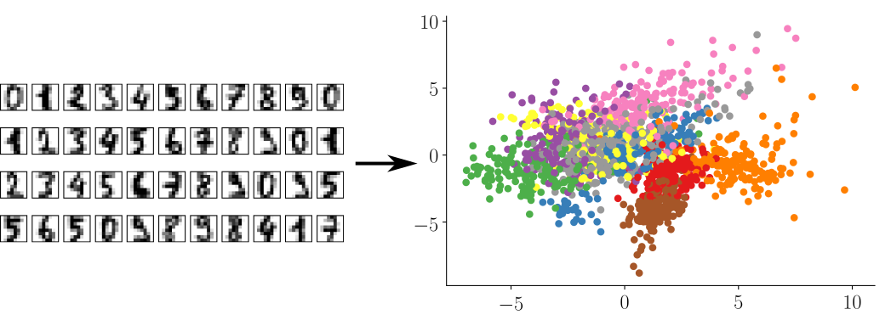
- Machine Learning Methods:
- Principal Components Analysis (PCA)
- Autoencoders
- Can the nature of bearing vibration be exploited to facilitate these methods?
Mixture Modeling
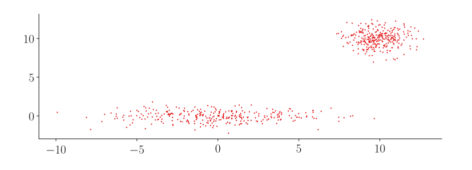
- Statistical technique used to approximate the density function of a dataset
- If data are "labeled," different classes can be delineated
- Can frequency-domain data be projected onto a mixture model to detect changes in vibration?
Machine Utilization and Anomaly Detection
- Communication Protocols
Machine Utilization and Anomaly Detection
- Assumptions
- Manufacturing equipment uses a finite number of "recipes"
- It is possible to express
An Example: Autoclaves
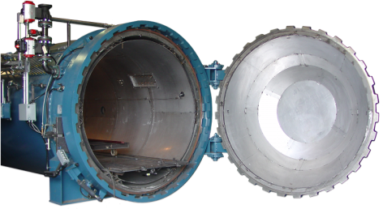- Distinct process parameters include:
- Composite makeup (thickness, material, etc.)
- Number of components
- Cure duration
- Cure temperature
- Cure pressure
Autoclave Example
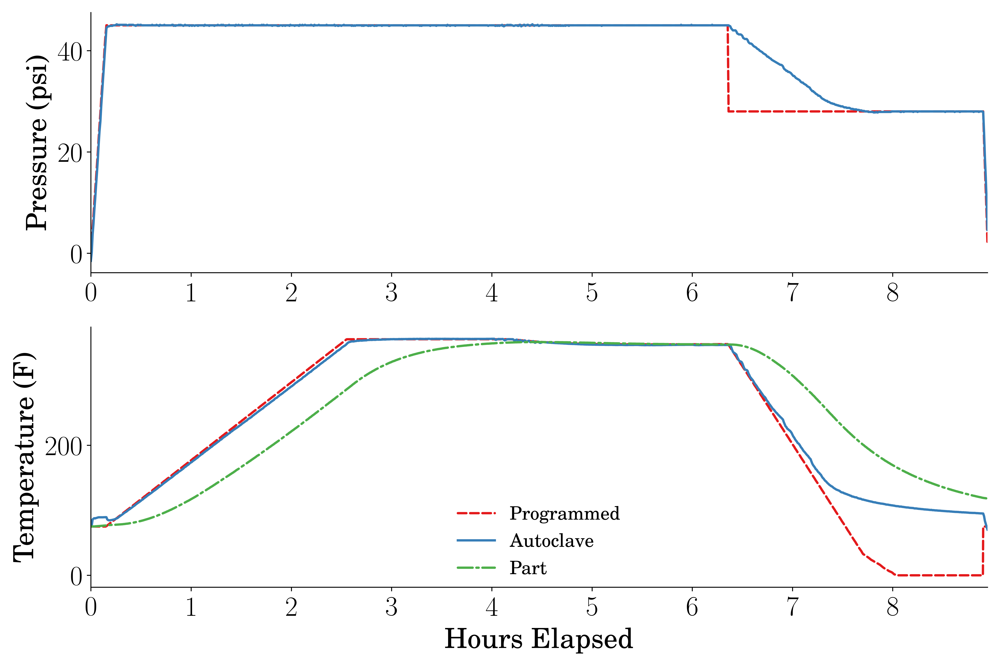
Autoclave Example
- Possible events and parameters include:
- Unscheduled downtime due to alarms
- Part heat capacity
- uncertainty/variance in the process
- Utilization (how full the autoclave is on each cycle)
IoT Architecture Extension
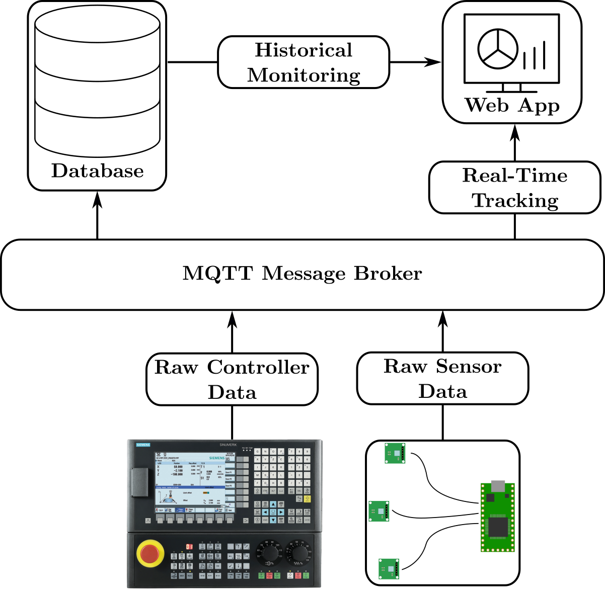
IoT Architecture Drawbacks
- Sensor data are not synchronized with controller data
- Difficult to request sensor data at a certain point in process
- Limited by microcontroller processing power for edge analytics
IoT Architecture Extension
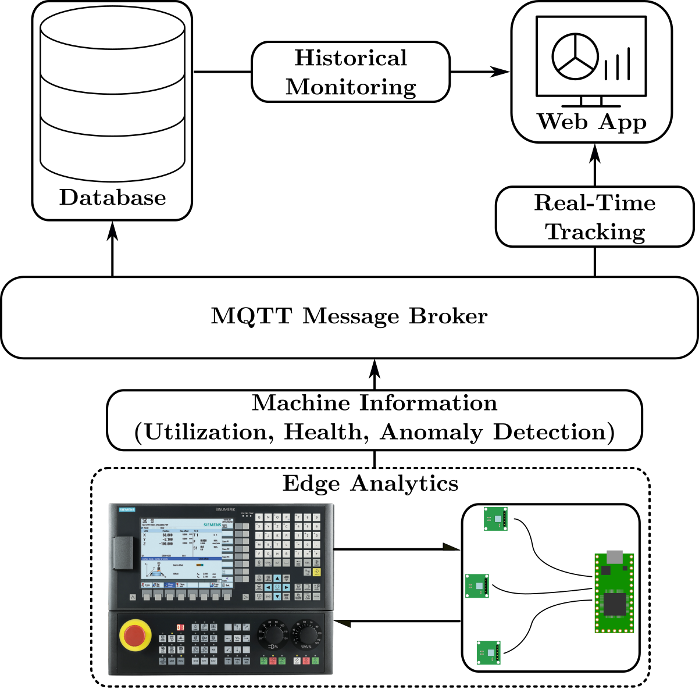
Root Mean Square
$$\mbox{RMS} = \sqrt{\dfrac{1}{n}\sum_{i=1}^{n}x^2_i}
$$
- Provides information on intensity of vibration
- As a bearing nears the end of its life, RMS value rapidly increases
Root Mean Square
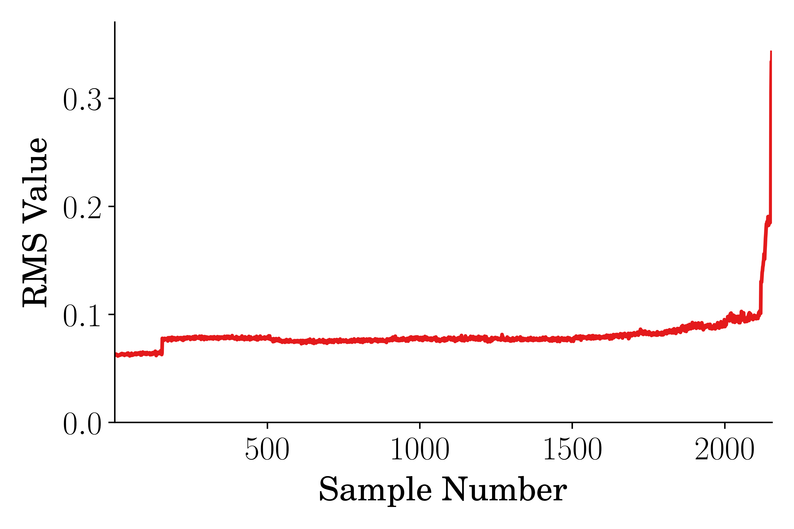
Kurtosis
$$\mbox{Kurt} = \dfrac{\dfrac{1}{n}\sum_{i=1}^n(x_i - \bar{x})^4}{\left ( \dfrac{1}{n}\sum_{i=1}^n(x_i - \bar{x})^2 \right )^2} - 3
$$
- Provides information on impulsivity of vibration
- As a signal degrades, its kurtosis increases.
- A perfectly Gaussian signal will have a kurtosis of zero.
Spectral Kurtosis
- When a bearing defect manifests, it may cause amplitude modulation at very high frequencies.
- By analyzing the signal kurtosis at specific frequencies, it is possible to determine the bands in which this modulation occurs.
Background: Bearing Failure
Amplitude Demodulation
- This is a signal processing technique by which a highly modulated signal may be manipulated to reveal an underlying defect.
- The steps are as follows:
- Filter the signal about the modulating frequencies with a band-pass filter
- Rectify the filtered signal
- Use a low-pass filter to recover an envelope of the resulting signal
Background: Bearing Failure
Amplitude Demodulation
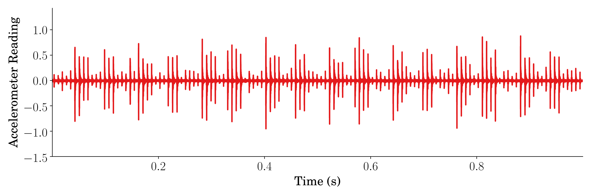
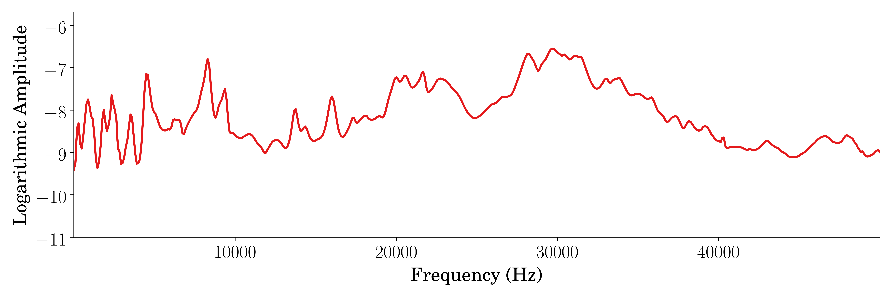
Amplitude Demodulation
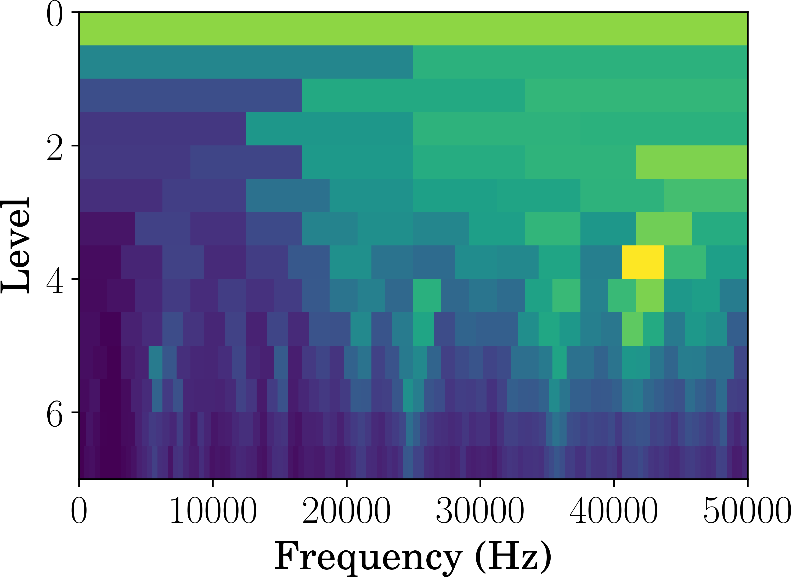
Statistical Tools
- Bayes' Rule
- Clustering
- Kalman Filtering
- Dimensionality Reduction
- Control Charts
Background
Bayes' Rule
$P(A | B) = \dfrac{P(B|A) P(A)}{P(B)}$
Background: Statistical Tools
Work Accomplished
Prototype Sensor Kit
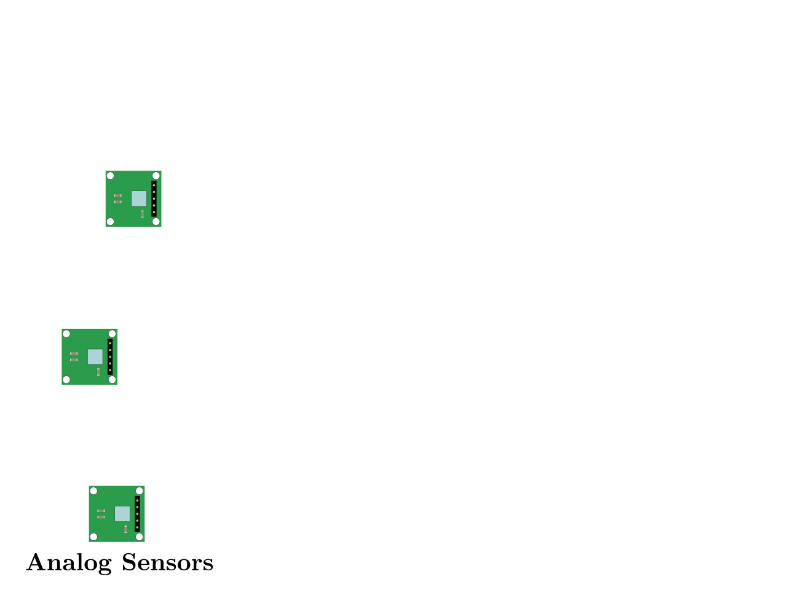
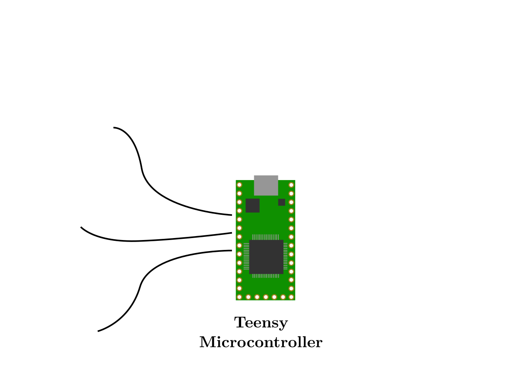
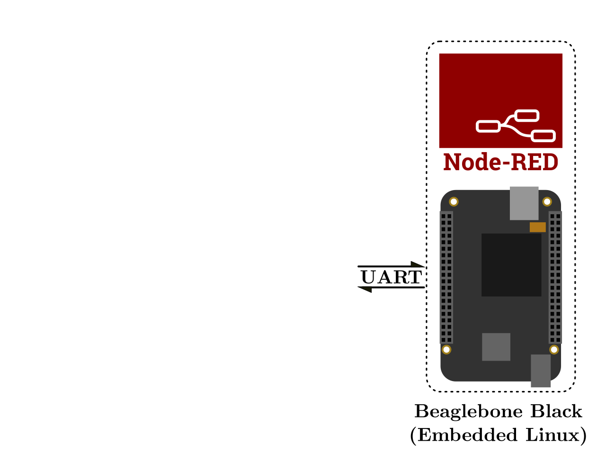
Accelerometer Data Acquisition
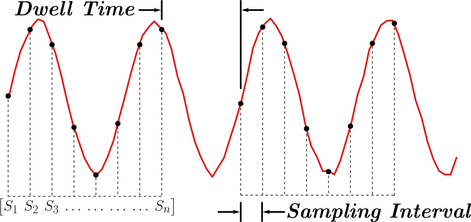
Microcontroller Flow Diagram
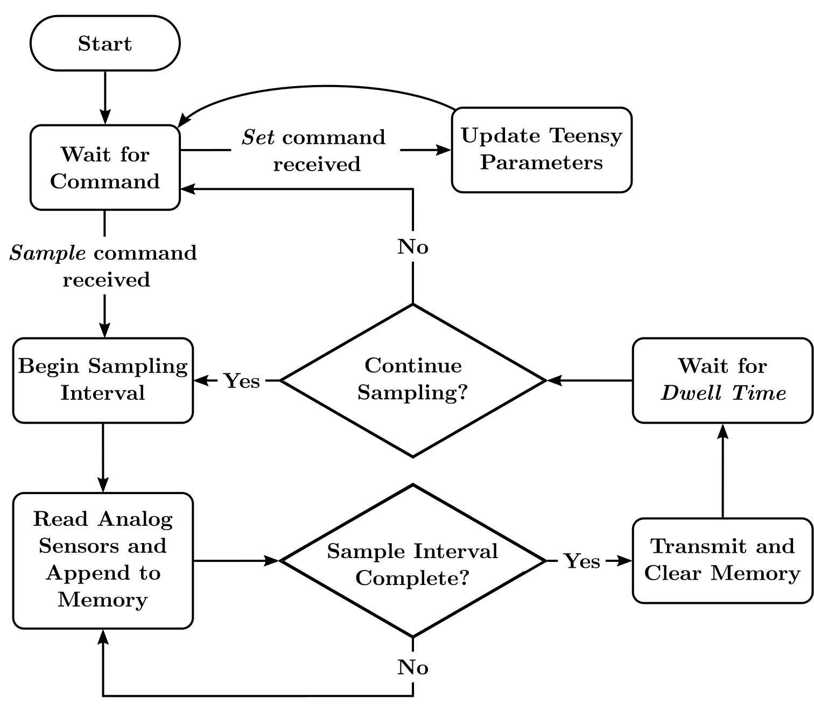
Sensor Kit

Sensor Kit
{"dateTime":"2019-03-08T15:43:44.808Z",
"assetId":"A1000",
"dataItemId":"Vibration",
"itemInstanceId": "Part_EPICS_1001",
"sensorId": "accelerometer1",
"samplingInterval":0.00048828125,
"values":[0.895,0.889,...,0.877]}
Sensor Kit
{"dateTime":"2019-08-20T11:23:35.704Z",
"assetId":"Okuma-Genos-3",
"dataItemId":"LS1Speed",
"value":"3024"}
Pretty Code
import React, { useState } from 'react';
function Example() {
const [count, setCount] = useState(0);
return (
You clicked {count} times
);
}